iOS Deep Dive
Advanced Titanium Mobile Development
Agenda
- iOS Platform Characteristics
- iOS-specific API Overview
- Key APIs
- Deep Dive: iOS Properties
- Examples in Action
- Lab Exercise Overview
Platform Characteristics
What we are talking about is Cocoa Touch, which provides the key frameworks for developing applications on devices running iOS

Platform Characteristics
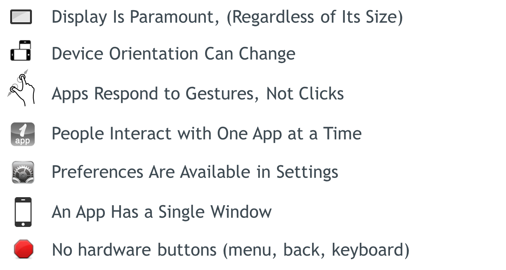
iOS User Interface Basics
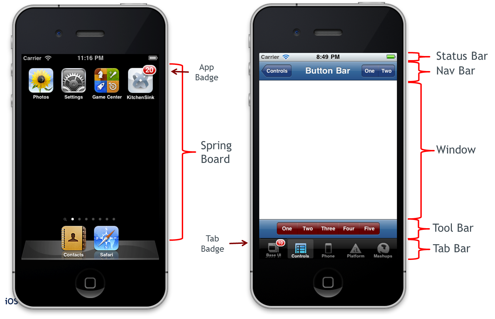
iOS-Specific API Overview
- Titanium.UI
- Titanium.UI.iOS
- Titanium.UI.iPhone
- Titanium.UI.iPad
- Titanium.App.iOS
- Titanium.Contacts
- Titanium.Media
- Titanium.Network
Key User Interface APIs
- Ti.UI.iPhone.NavigationGroup
- Ti.UI.iOS.Toolbar
- Ti.UI.iOS.TabbedBar
- Ti.UI.iOS.CoverFlowView
- Ti.UI.DashboardView (not in iOS namespace)
- Ti.UI.iOS.AdView
UI: Navigation Group
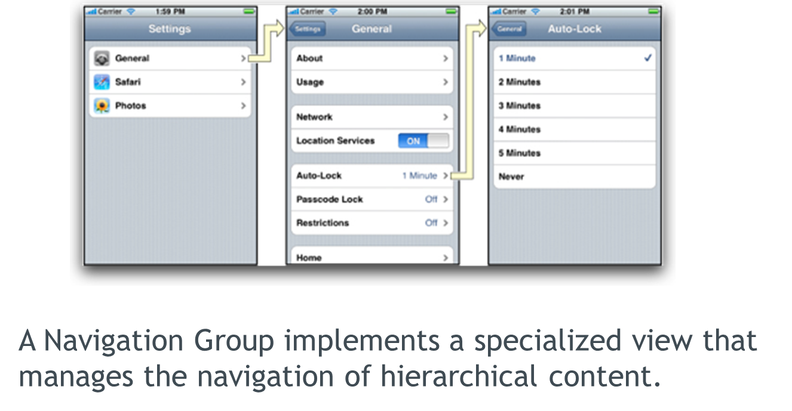
A Navigation Group implements a specialized view that manages the navigation of hierarchical content
UI: Navigation Group - Example
// need a window for inside our nav group
var innerWin = Ti.UI.createWindow({
backgroundColor: '#fff',
title: 'Dashboard',
barColor: #f5c115;
});
// create the nav group
var nav = Ti.UI.iPhone.createNavigationGroup({
window: innerWin
});
// add the nav group to app's main window
var outerWin = Ti.UI.createWindow();
outerWin.add(nav);
outerWin.open();
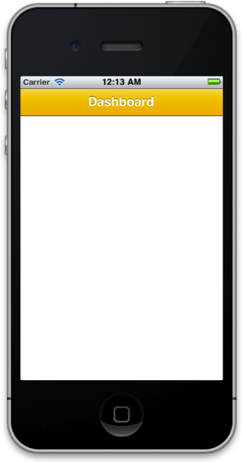
UI: Navigation Group - Adding a Window
// add windows to the nav group
var win2 = Ti.UI.createWindow({
backgroundColor: '#fff',
title: 'Details',
barColor: #f5c115;
});
nav.open(win2);
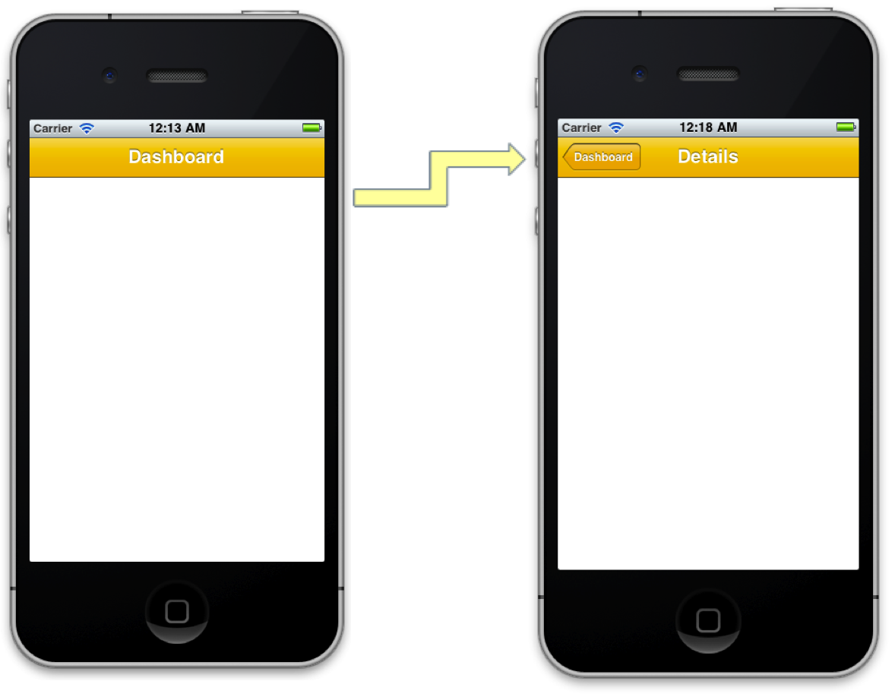
UI: Navigation Bar - Example
// create buttons to go in the nav bar
var back = Ti.UI.createButton({ title: 'Back' });
// implement the buttons
win.setLeftNavButton(back);
// add an image to the nav bar
win.titleImage('/images/skull.png');
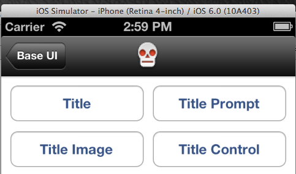
UI: Toolbars
UI: Toolbars
// create buttons to go in the tool bar
var camera = Ti.UI.createButton();
var flexSpace = Ti.UI.createButton({
style:Ti.UI.iPhone.SystemButtonStyle.FLEXIBLE_SPACE
});
// other buttons would be defined here
// implement the toolbar
win.toolbar = [camera, flexSpace, tf, flexSpace, send];
UI: Keyboard Toolbars
// create buttons to go in the tool bar
var camera = Ti.UI.createButton();
...
// create the TextField or TextArea
var textview = Ti.UI.createTextArea({
keyboardToolbar = [camera, flexSpace, tf, flexSpace, send],
keyboardToolbarColor: '#999',
keyboardToolbarHeight: 40
});
UI: Button Bar
var bb = Ti.UI.createButtonBar({
labels: ['One', 'Two', 'Three', 'Four', 'Five'],
backgroundColor: 'maroon',
/* style is optional */
style: Ti.UI.iPhone.SystemButtonStyle.BAR
});
win.add(bb);
UI: Tabbed Bar
var tb = Ti.UI.iOS.createTabbedBar({
labels: ['IMAP', 'POP', 'Exchange']
});
tb.addEventListener('click', function(e){
switch(e.index) {
case 0:
// do stuff
break;
}
});
win.add(tb);
UI: Switch
- Presents two mutually exclusive choices
- On iOS, can't change labels
- Android & Mobile Web offer more flexible options
- 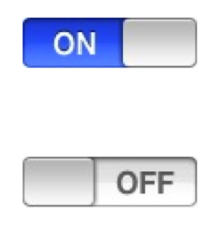
var switch = Ti.UI.createSwitch({
value: true
});
switch.addEventListener('change', function(e){
if(e.value === true) {
// switch is on ...
}
});
win.add(switch);
UI: Slider
var slider = Ti.UI.createSlider({
min: 0, max: 10,
value: 3,
thumbImage: 'images/skull.png'
});
win.add(slider);
UI: iPad-Specific APIs
Ti.UI.iPad.Popover
Ti.UI.iPad.SplitWindow
Key APIs - Titanium.UI.iPad.Popover
- Transient view revealed by tap on control
- Hovers over app content
var popover = Ti.UI.iPad.createPopover({
height: 100,
width: 100
});
// contents of popover
var innerView = Ti.UI.createView();
popover.add(innerView);
// view property controls where the
// arrow points
popover.show({view: button});
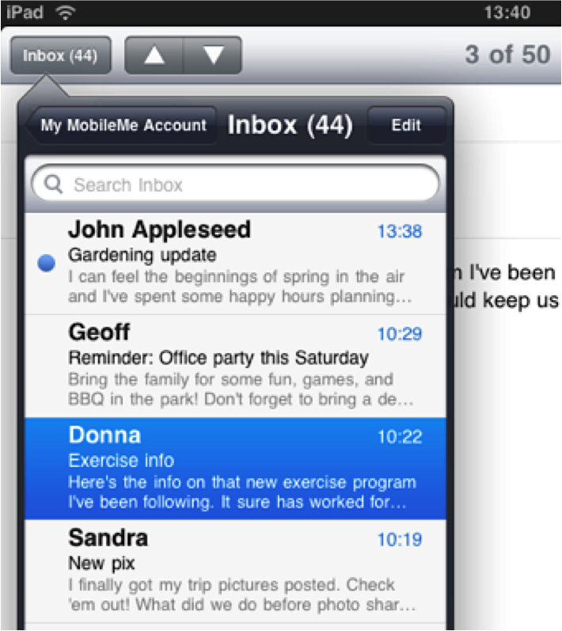
Key APIs - Titanium.UI.iPad.SplitWindow
- Full-screen, two-pane view
- Left pane fixed at 320 points
- User cannot resize panes
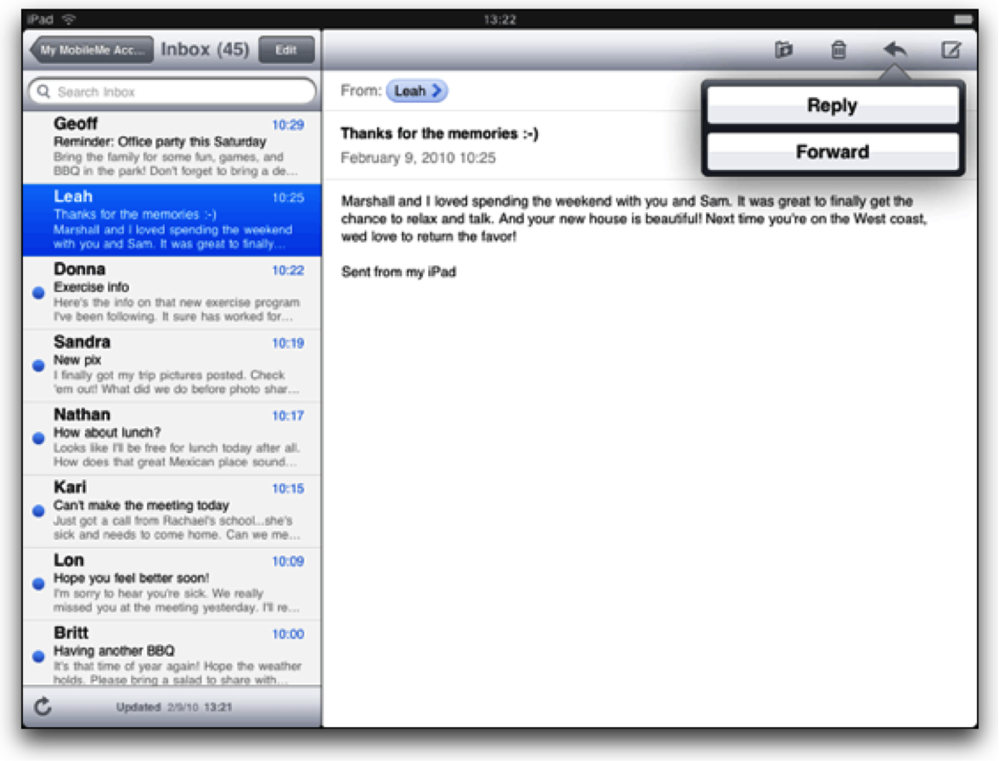
Key APIs - Titanium.UI.iPad.SplitWindow
// These will be the contents of the splitwindow
var masterPane = Ti.UI.createView();
var detailPane = Ti.UI.createView();
// create the splitwindow
var splitwin = Ti.UI.iPad.createSplitWindow({
detailView: detailPane,
masterView: masterPane
});
// you don't add the splitwin to a win object
// it is the top-level 'window' object
splitwin.open();
UI: Tab Badge
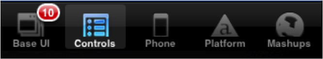
Communicates status to the user, their attention is needed in part of your app
var tab = Ti.UI.currentTab;
tab.badge = 10; // set the badge
tab.badge = null; // to remove it
UI: App Badge

Ti.UI.iPhone.appBadge = 14;
Ti.UI.iPhone.appBadge = null;
UI: CoverFlow View
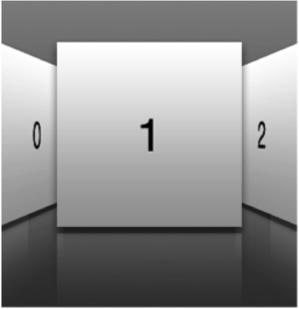
var cover = Ti.UI.iOS.createCoverFlowView({
images: ['a.png', 'b.png', 'c.png'],
backgroundColor: '#000'
});
win.add(cover);
UI: Dashboard View
- Springboard-like view
- Use as app home screen
- User can rearrange or remove icons (if you enable it)
- Scrolling container
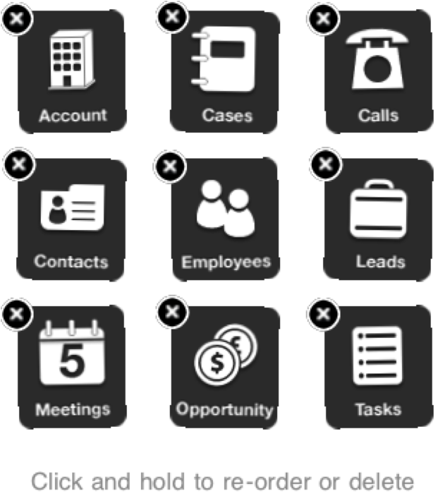
UI: Dashboard View
// create the button items to go in the dashboard
var item = Ti.UI.createDashboardItem({
image: 'images/item1.png',
label: 'Home'
});
// create the dashboard
var dashboard = Ti.UI.createDashboardView({
data: [item],
wobble: true /* wobble while in edit mode */
});
win.add(dashboard);
var isEditable = false;
item.addEventListener('longpress', function() {
(isEditable) ? dashboard.stopEditing() : dashboard.startEditing();
});
dashboard.addEventListener('edit', function() {
// in edit mode, handle accordingly
});
UI: AdView
- Include ads in your app
- Banner or full screen
- Must join Apple's iAd program
- Get test ads only during development
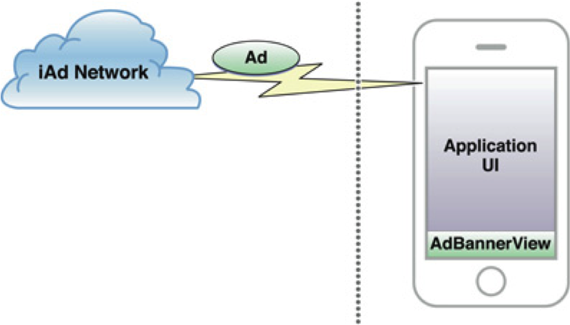
UI: AdView
var iad = Ti.UI.iOS.createAdView({
width: 'auto',
height: 'auto',
bottom: -100
});
iad.addEventListener('load', function(){
iad.animate({
bottom: 0,
duration: 500
});
});
iad.addEventListener('action', function(){
mygame.pause(); // do something when ad is clicked
});
win.add(iad);
Platform Functionality APIs
- Ti.App.iOS
- Ti.Contacts
- Ti.Media
- Ti.Network
Background Services
- Extend runtime for limited duration
- Long-running geolocation or music playback
var svc = Ti.App.iOS.registerBackgroundService({
url: 'bg.js'
});
<ios>
<plist>
<dict>
<key>UIBackgroundModes</key>
<array>
<string>audio</string>
<string>location</string>
<string>voip</string>
<string>newsstand-content</string>
<string>external-accessory</string>
<string>bluetooth-central</string>
</array>
</dict>
</plist>
</ios>
Local Notifications
- Runs on device, not push
- Scheduled action
- Background service alert the user
// schedule the notification
Titanium.App.iOS.scheduleLocalNotification({
alertBody:"View Alarm",
alertAction:"You set an alarm",
userInfo:{data: 'Data to pass'},
date:new Date(new Date().getTime() + 3000)
});
// listen for the notification
Ti.App.iOS.addEventListener('notification',
function(e) {
Ti.API.info('Local notification received: '
+ e.data);
});
Key APIs - Contacts, Media, Network
- Ti.Contacts.Group
- Ti.Contacts.Person
- Ti.Media.AudioRecorder
- Ti.Media.Item
- Ti.Media.MusicPlayer
- Ti.Network.BonjourBrowser
- Ti.Network.BonjourService
Deep Dive: iOS-Specific Properties
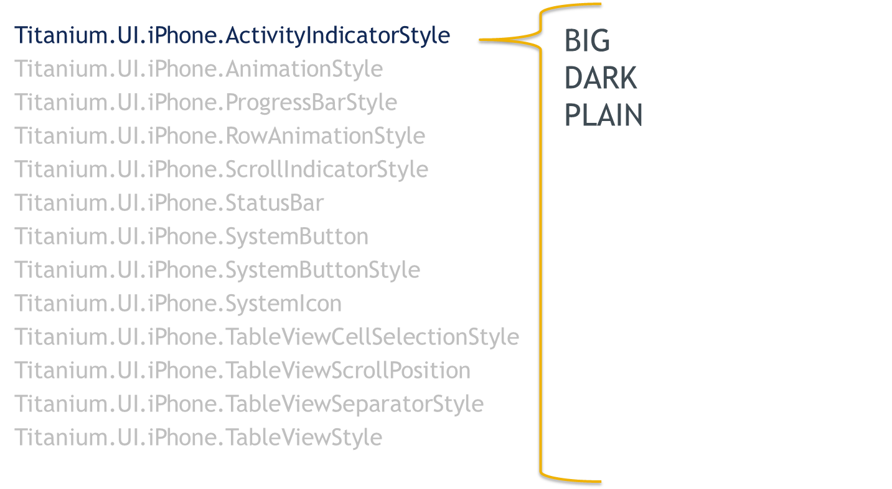
Deep Dive: iOS-Specific Properties
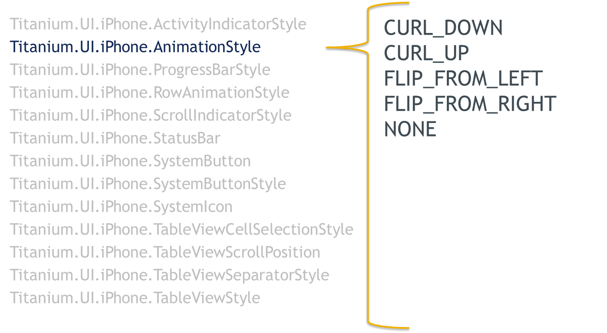
Deep Dive: iOS-Specific Properties
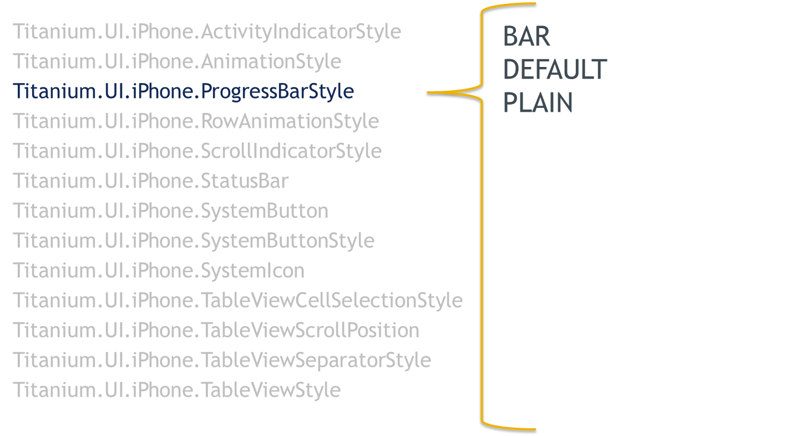
Deep Dive: iOS-Specific Properties
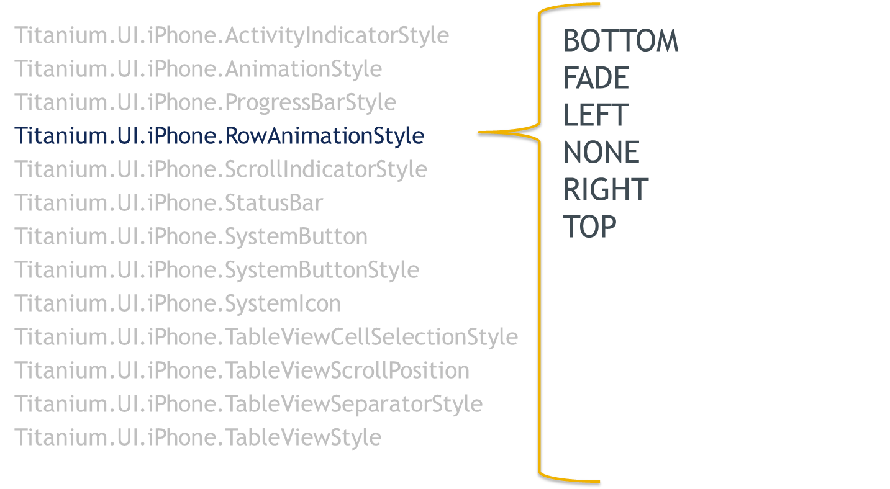
Deep Dive: iOS-Specific Properties

Deep Dive: iOS-Specific Properties
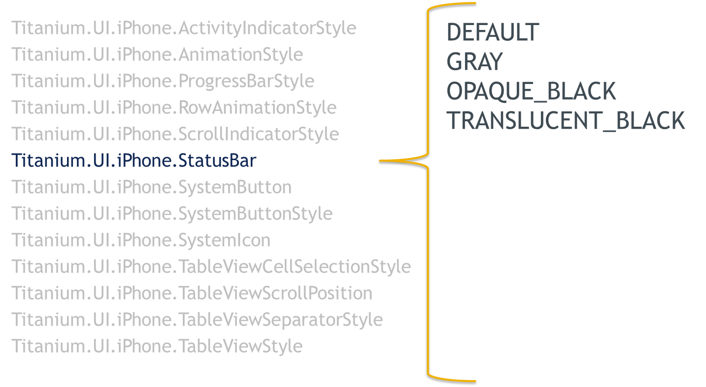
Deep Dive: iOS-Specific Properties
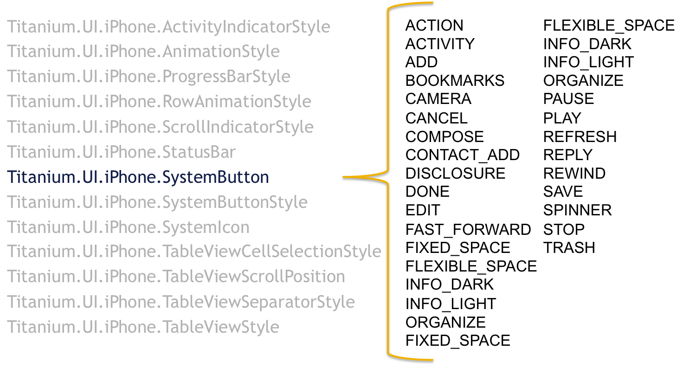
Deep Dive: iOS-Specific Properties
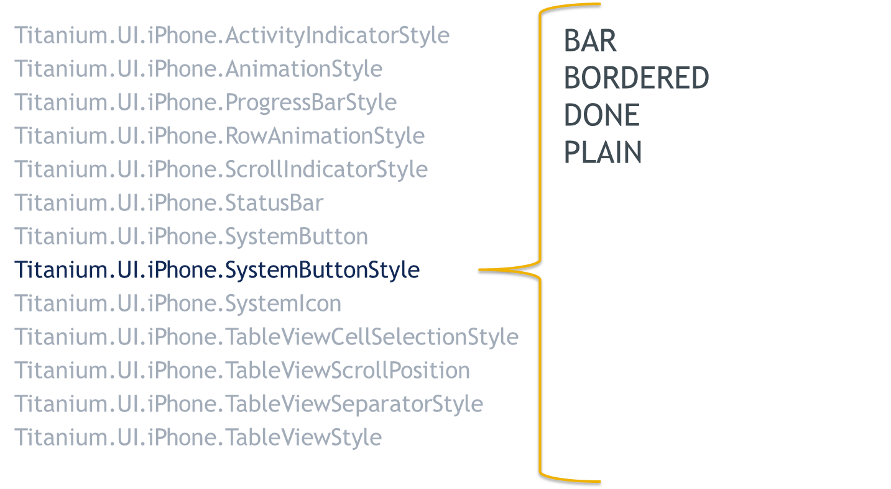
Deep Dive: iOS-Specific Properties
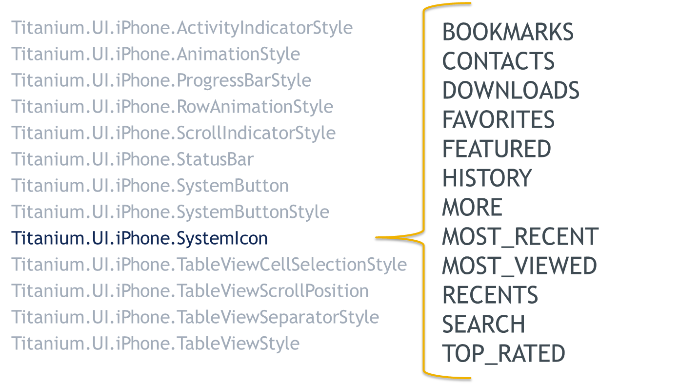
Deep Dive: iOS-Specific Properties
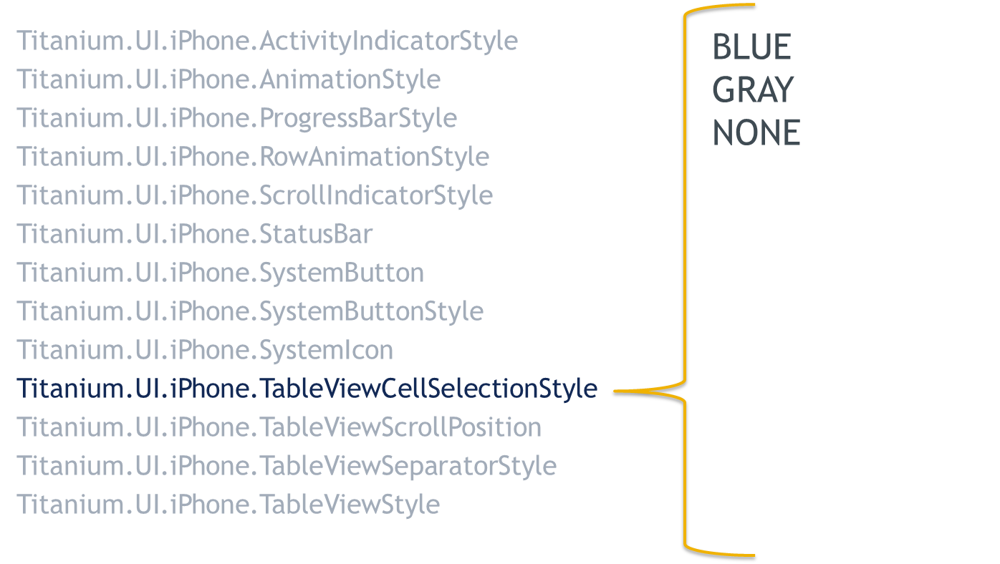
Deep Dive: iOS-Specific Properties
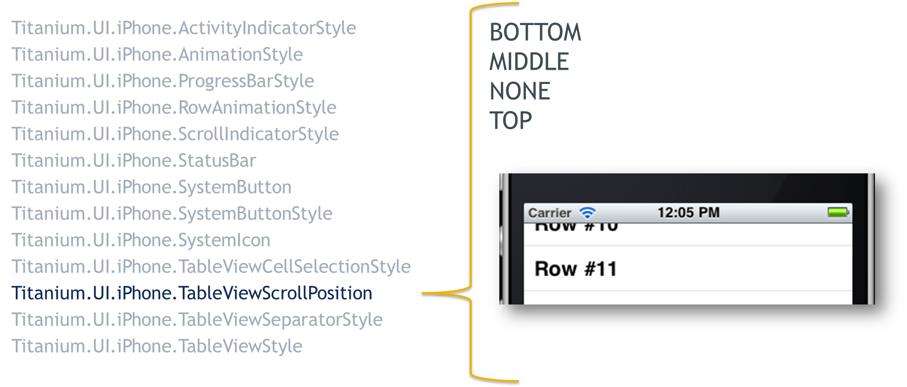
Deep Dive: iOS-Specific Properties
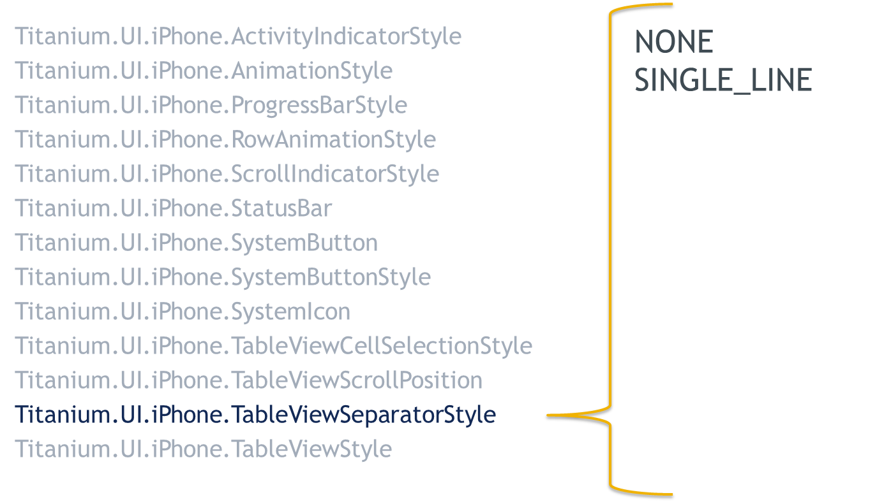
Deep Dive: iOS-Specific Properties
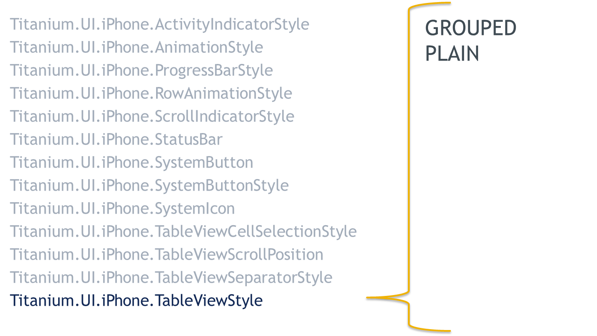
Implementing Application Preferences
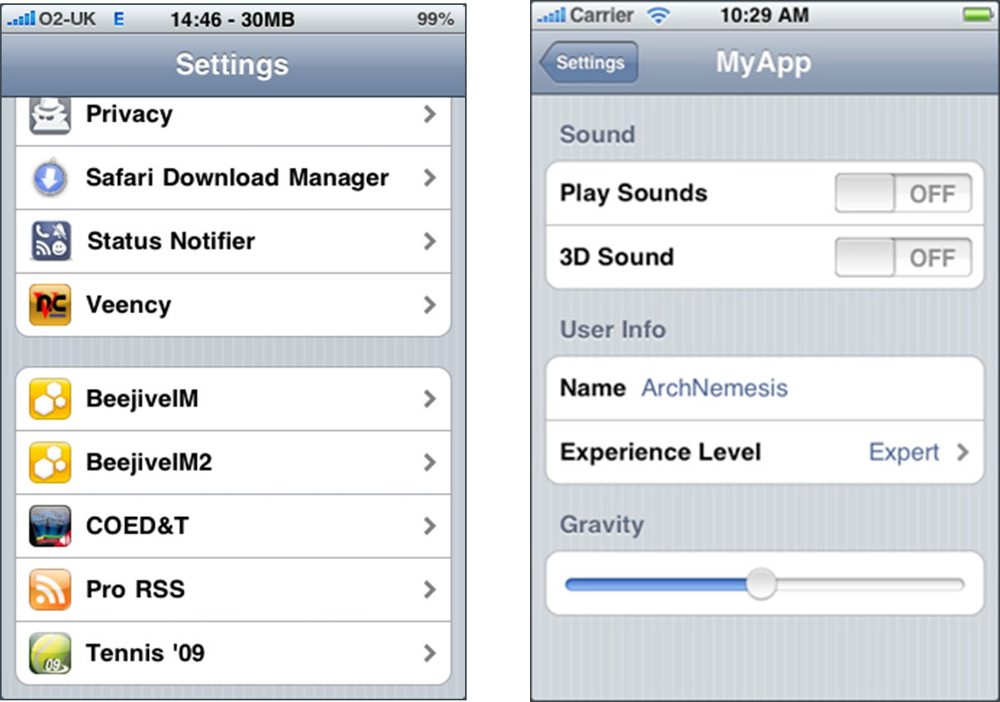
Creating the Settings Bundle
- Copy KitchenSink/platform/iphone to your project
- In Finder, right-click Settings.bundle and choose Show Package Contents
- Open Root.plist
- Edit as necessary, then save
- Do clean-build of your project
Q&A
Lab Goals
Add settings to an iOS application